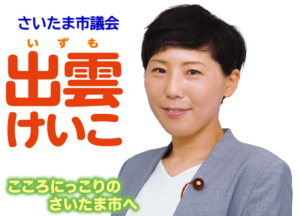
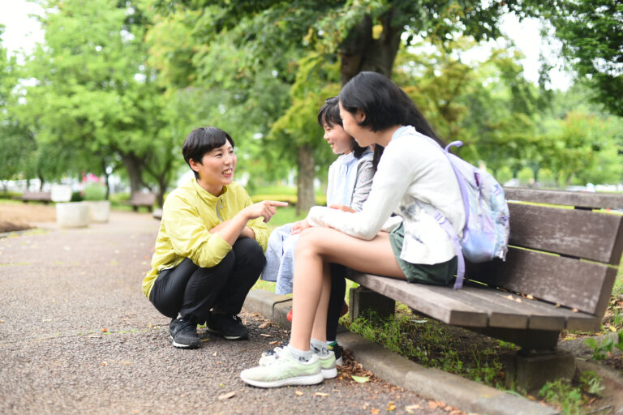
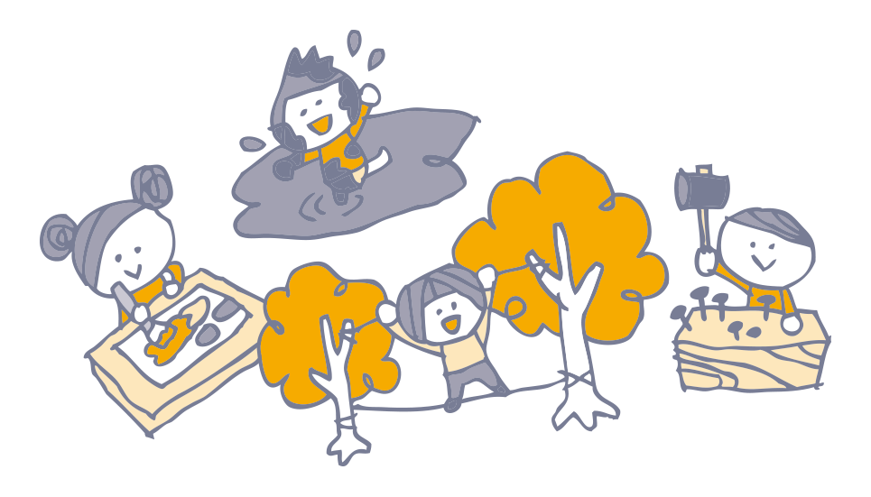
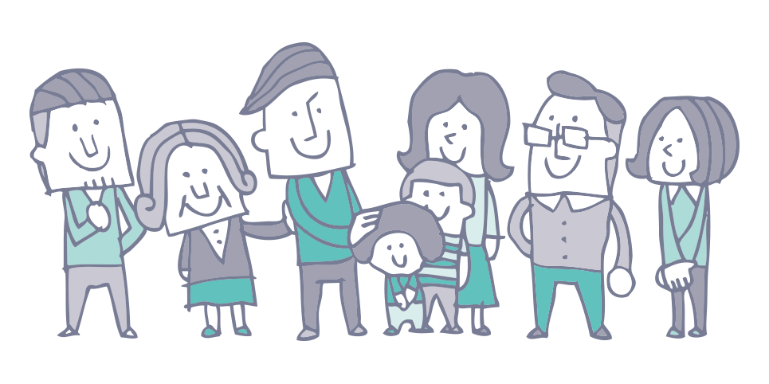
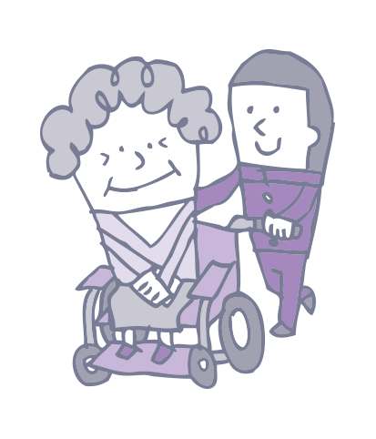
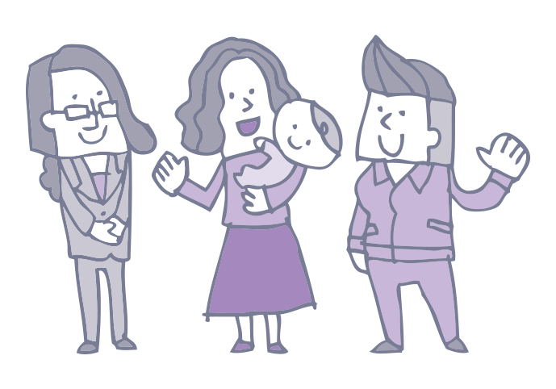
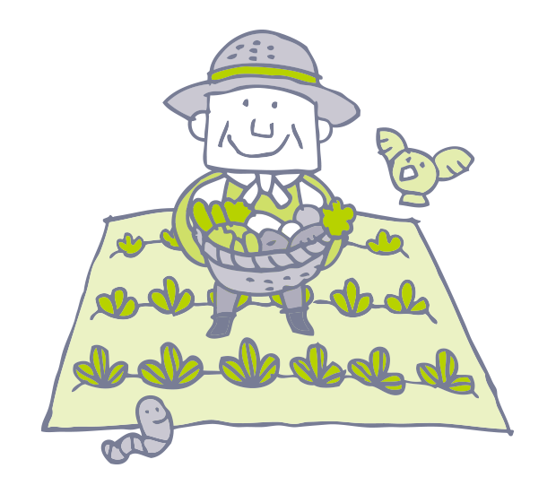

これは旧ホームページ（トップページ）の保存版です。
2026年9月時点でizumokeiko.comに掲載されていた内容を、記録として保存しています。最新の情報は現在のサイトの各ページをご覧ください。


こころにっこりまちづくり
２０１０年にさいたま市に引っ越し、翌年２０１１年 東日本大震災が発生し、家族だけで子どもたちを守ることには限界があり、友人や地域とのつながりが大事だと考えるようになりました。
二人の子どもの母である私が、子育てのリアルな声を生かした政策提案につなげていきます。
子どもたちが安全にこころにっこり過ごせるまちは地域の活力があり、かつ高齢者や障害者の方々も安心して過ごせるまちです。
あなたの暮らしの声に寄り添った、きめ細かい政策提案をします。お困りごとがありましたら、ご連絡ください。
出雲けいこの提案
一人ひとりの多様な価値観や生きかたを認め合い尊重し、お互いさまに支え合える社会に向けて

①その子らしく育つための環境の充実
- プレイパーク（冒険遊び場）を身近な場所に
- 子どもたちの意見が反映される社会のために、子ども議会やアドボケイト制度の導入
- 学校外で学ぶ経済的支援と居場所の充実
- ユースクリニックの設置
- 高等教育（大学、短期大学、専門学校など）の修学支援制度の充実

②ママ、パパに寄り添った支援の充実
- 子育て家族の支援の充実
- ひとり親、多胎児、リトルベビー家族などの支援の充実
- 保育施設や学童・放課後デイ等の質と場の充実
- 医療的ケア児や障害児と家族の支援

③あなたらしさが尊重される社会
- 家族を支えるケアラー、ヤングケアラーの支援
- 女性が様々なライフステージをしあわせに過ごせる支援

④命と暮らしを守るさいたま
- 福祉ネットワークで支え合いを
- 水害に強いインフラの強化
- 誰一人取り残さない減災・防災

⑤持続可能な社会のために
- 地産地消のエネルギー活用
- 食品ロス削減
- 有機農業の推進
- リユースしやすい教材や学用品を提案
- コミュニティバス等の交通手段の拡充